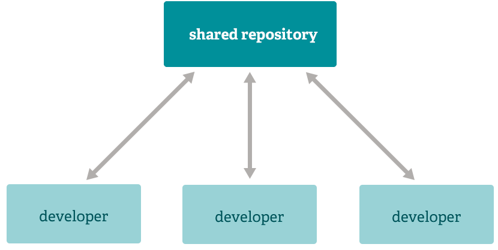

Welcome to 
Is it...
- Free? yes
- Open Source? yes
- Fast? yes
- The Best? we'll see...
In technical speak, git is a
Distributed Version Control System.
What the heck is that?
Version Control is the idea that we want to track changes to data over time.
Simple? yes.
Powerful? you bet.
...and not just code!
Whether you compose Word documents, sketch Photoshop designs, or hack on JavaScript, version control is a fantastic way of tracking your changes.
So what does it mean to be distributed?
To paraphrase Wikipedia, "no canonical, reference copy of the [repository] exists by default". In other words, every collaborator has a full copy of the repository.
In practice, one working copy of a given repository is usually kept on a 'central' system.
However, you don't have to collaborate with others to reap the benefits of git.
Just initialize any folder as a git repository and you're off to the races.
Benefits of DVCS/git, just to name a few:
- * You have a complete copy of the repository - the full history
- * You don't need network connectivity to be productive
- * Much higher performance - common operations are local
- * If the main server is down...who cares
- * A 'server' in the SVN sense is not even technically necessary
- * Use it on your own, to track any content changes over time
- * Everyone is a 'backup' for everyone (when collaborating)
- * Merging is actually fun and fast, not an 'up to 8 hour' process
- * More than just a 'centralized' workflow is possible
- * ...
Centralized workflow
One example of a distributed workflow

The Linux kernel uses this one